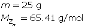
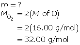

Chemistry 20: Module 6—Stoichiometry
 Self-Check Answers
Self-Check Answers
SC 1. Practice questions 9 to 14, page 290
8 Zn(s)
+
S8(s)
→
8 ZnS(s)

Determine the number of moles of zinc.
Use the mole ratio to determine the number of moles of sulfur.
Calculate the mass of sulfur required.
12 g of sulfur is required to react with 25 g of zinc.
-
2 Al2O3(s)
→
4 Al(s)
+
3 O2(g)
66.2 g of aluminium is produced when 125 g of bauxite is decomposed.
-
C3H8(g)
+
5 O2(g)
→
3 CO2(g)
+
4 H2O(g)

36.3 g of oxygen is required to combust 10.0 g of propane.
-
2 NaCl(aq)
+
Pb(NO3)2(aq)
→
PbCl2(s)
+
2 NaNO3(aq)
6.11 g of lead(II) chloride precipitate is produced by the reaction.
-
2 Al(s)
+
3 H2SO4(aq)
→
3 H2(g)
+
Al2(SO4)3(aq)

0.307 g of hydrogen is produced when 2.73 g of aluminium react.
-
2 KOH(aq)
+
Cu(NO3)2(aq)
→
Cu(OH)2(s)
+
2 KNO3(aq)

2.32 g of copper(II) hydroxide precipitate is produced by the reaction.